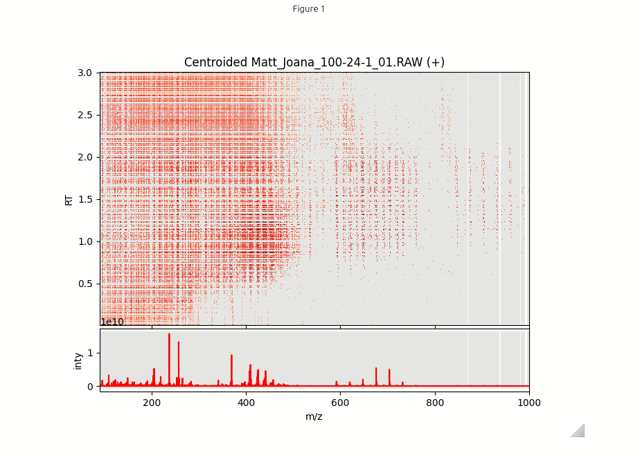

from kendrick import histogram, get_time_averaged_centroids, interactive_plot, read_raw, centralizeCentroiding again
But keeping time
In the previous section we explained how to read the data contained in the Thermo .RAW file into dataframes and explore them in an interactive plot. At the highest resolution it became clear that the individual data points during the three minutes scan scatter around the vertical gray lines located at the maxima of their corresponding peaks in the time integrated mass histogram shown in the lower part of the figure. Reason for this scattering is the limited instrumental precision of the mass spectrometer. In order to proceed with our analysis we essentially need to horizontally move all points that are located within the instrumental precision onto these vertical gray lines. Confusingly the raw data was already centroided within each individual scan during the measurement. And now by horizontally shifting the masses to these histogram maxima we centroid the data again!
raw_file = '/home/frank/.cache/fairdatanow/asap-data/2025 Théo-Fany Lange - the dutch method/xcalibur raw data files/Matt_Joana_100-24-1_01.RAW'df_pos, df_neg = read_raw(raw_file)
mz_hist = histogram(df_pos)
mz_centroids = get_time_averaged_centroids(mz_hist)To create a new dataframe with mass points that are aligned to the centroid lines use the centralize() function. For now we want to set the the option keep_time_dim=True to observe the horizontal shift of all points.
df_centr = centralize(df_pos, mz_centroids, keep_time_dim=True)Let’s now inspect this centroided dataframe in interactive plot below.
interactive_plot(df_centr, mz_hist, mz_centroids, title='Centroided Matt_Joana_100-24-1_01.RAW (+)')
At low resolution this plot looks quite similar to the original data. However, when zooming in one can observe that the mass points are now perfectly aligned with the grey centroid lines. By doing so we have increased the mass resolution of our data which means that we are ready to create Kendrick plots in the next section.
FUNCTIONS
centralize
def centralize(
df, precision:float=0.002, keep_time_dim:bool=False
):
Shift mass points in dataframe df to centroid marker positions and discard outliers.
If keep_time_dim is True return dataframe with time dimension, otherwise sum intensities and return total intensity mass spectrum.